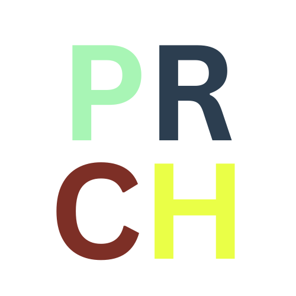

Reason: This is the name of our planned review center.

PRCH Logo
Site Purpose
The website will serve as an online platform for our upcoming review center, providing essential information
about the programs offered. It will include:
A home page with an overview of the review center.
An "About the Mentors" page introducing the instructors and
their credentials.
A registration form for visitors who want to inquire about
programs and enrollment.
An "About Us" page describing the review center's mission,
vision, and values.
Scenarios
How can I enroll in one of the review programs?
Who are the mentors, and what are their qualifications?
Color Schema
Primary Color: #a8f5b5 (Pastel Green)
Secondary Color: #2c3e50 (Dark Blue)
Accent 1 Color: #7d2f26 (Dark Red)
Accent 2 Color: #eaff47 (Yellow)
Typography
Heading Font: Poppins (for titles and section headers)
Body Font: Open Sans (for paragraph text and general content)